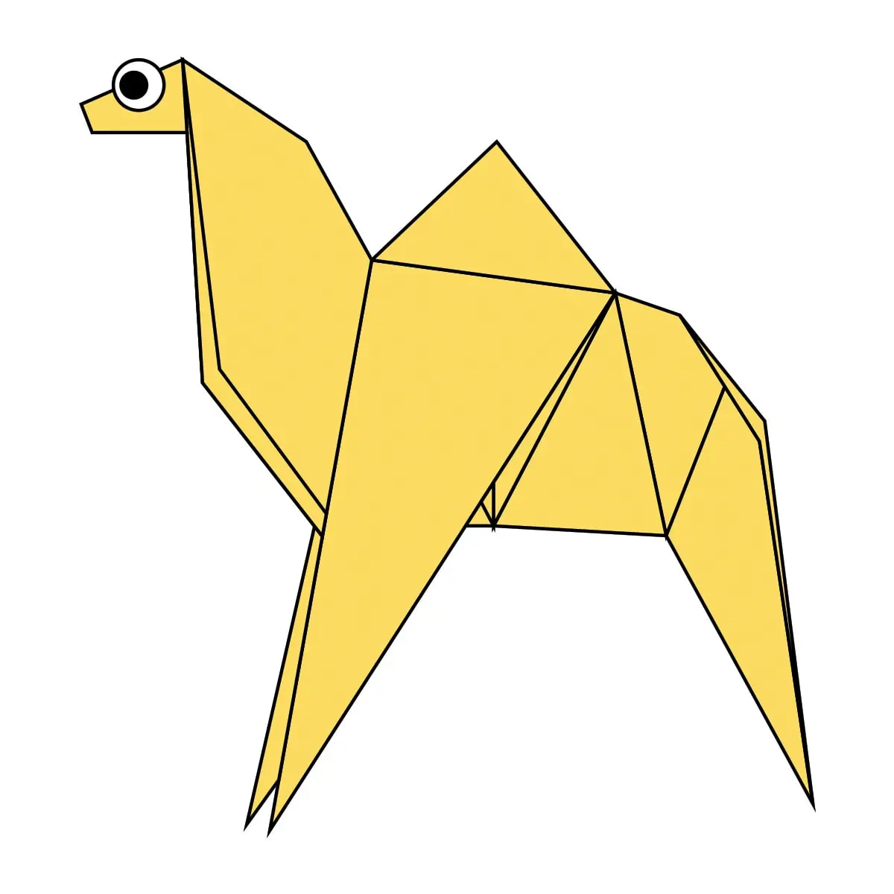
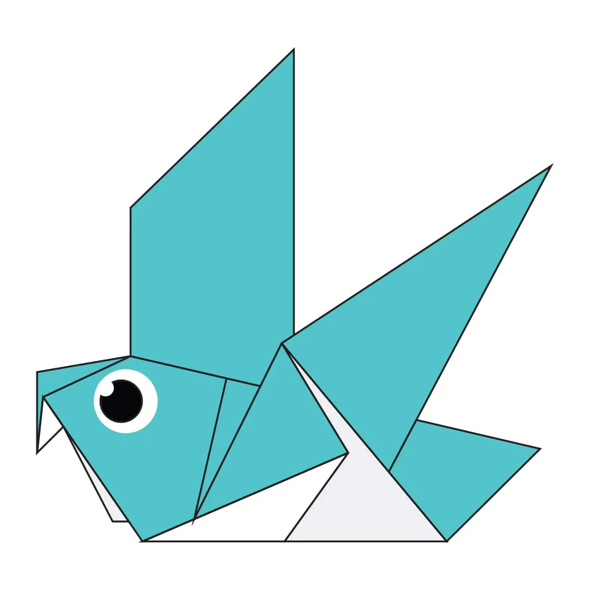

Origami Designs
About Us
Follow Us

Interesting facts about Camel
- Camels can completely shut their nostrils during sandstorms.
- Camels have thick lips which let them forage for thorny plants other animals can’t eat.
- Camels have three sets of eyelids and two rows of eyelashes to keep sand out of their eyes.

Insteresting facts about Chameleon
- Chameleons have eyes that can swivel. They can look at two different things at once.
- The panther chameleon changes its color to yellow or red when it’s angry.
- When a chameleon is cold, it will become darker in color. Dark colors attract heat better than light ones.

Insteresting facts about Pegion
- Pigeons mate for life, and tend to raise two chicks at the same time.
- Pigeons are highly sociable animals. They will often be seen in flocks of 20-30 birds.
- Pigeons can fly at altitudes up to and beyond 6000 feet, and at an average speed of 77.6 mph.
The fastest recorded speed is 92.5 mph.